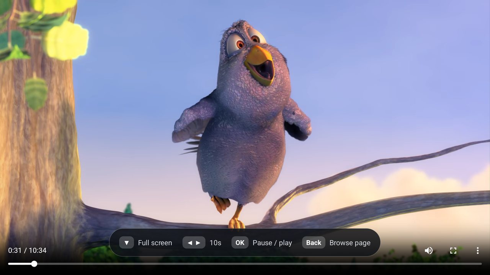
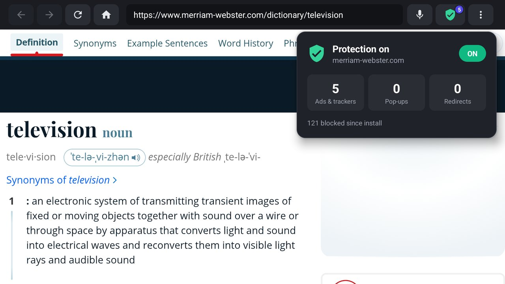
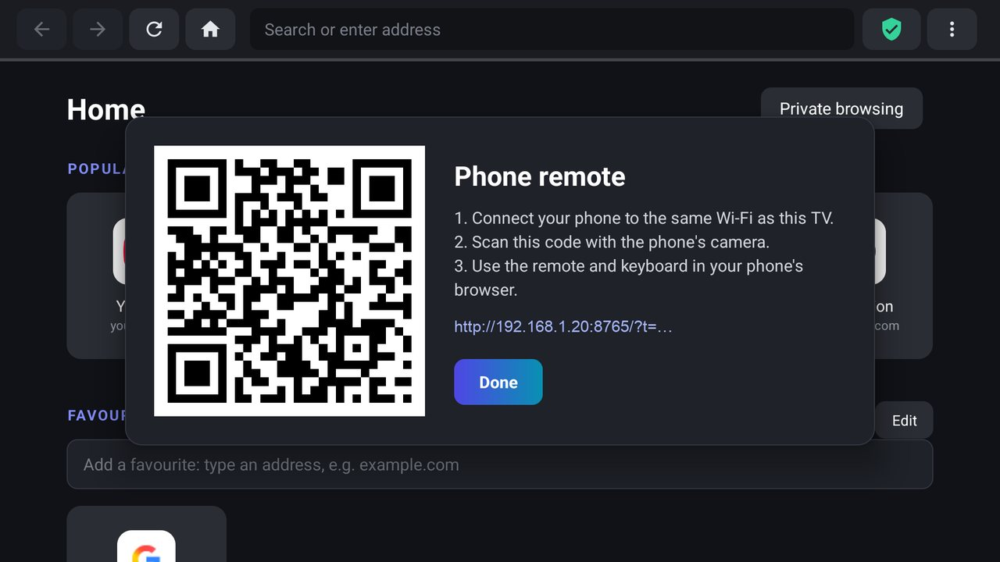
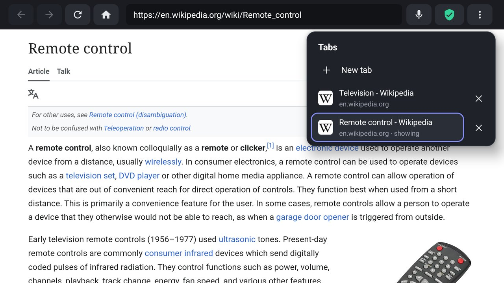
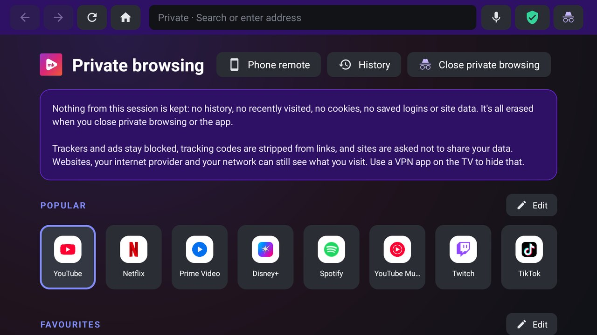
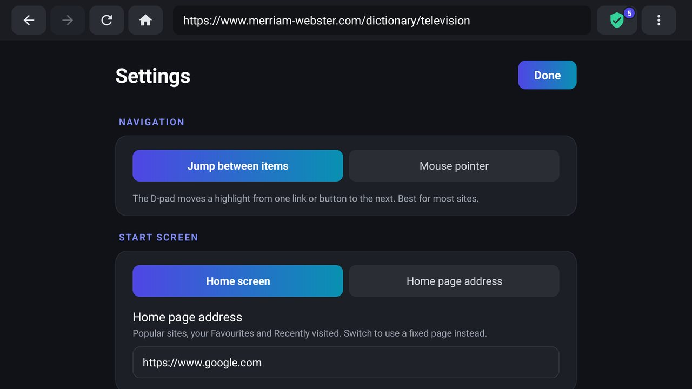
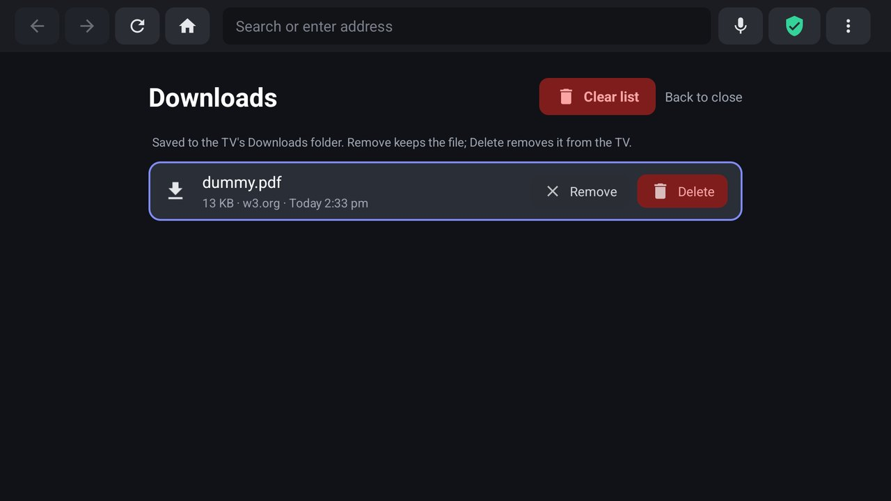
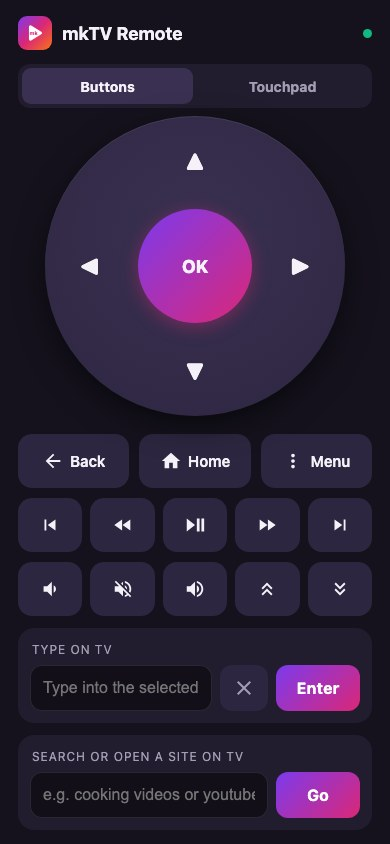
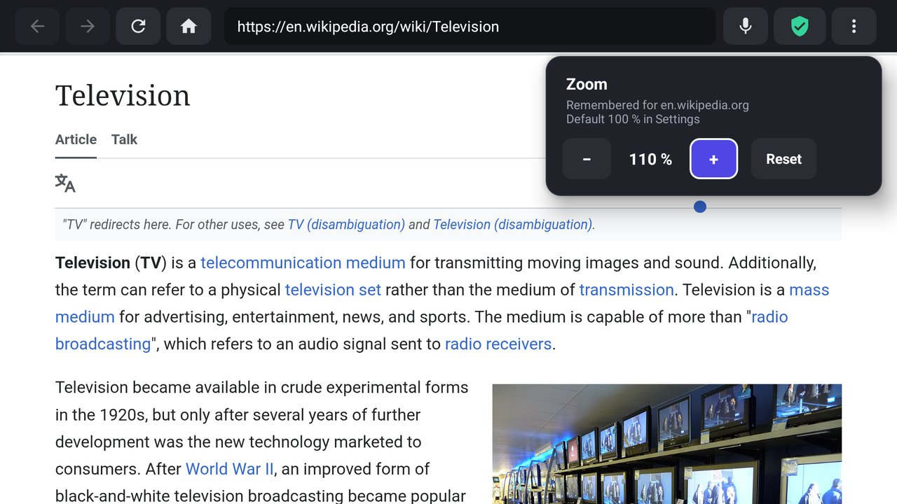

Free and open source · Android TV & Google TV
mkTV: the web browser made for your TV remote
Block ads, reach any link with the D-pad, and type from your phone.








mkTV in 40 seconds
Recorded on a real Google TV.
Turn the sound on for the voice-over.
Made for the sofa
Websites expect a mouse. mkTV makes them work with a remote.
Jump navigation
Arrow keys jump straight to the next link or button.
Ads blocked
Ads, trackers and pop-ups gone. Add more blocklists if you like.
Full-screen watch mode
Video fills the TV, and the remote controls it.
Phone as remote
Scan a QR code for a touchpad, keyboard and volume.
Tabs
Pop-ups you click open in a new tab, not over your page.
Downloads
Save files, install APKs and play videos you download.
Zoom per site
Make any site bigger; mkTV remembers it.
Favourites your way
Rename, reorder and group sites into folders.
Private browsing
A separate session, erased when you close it.
Continue watching
Long videos pick up where you stopped, also from your TV's Play Next row.
Parental controls
A PIN lock, Safe search and sites that never load.
Speed and sleep timer
0.75× to 2× per site, and a timer that pauses for you.
See it on a real TV
Unedited screenshots from a Google TV.
Home
Jump navigation
Tabs
Watch mode
Ad blocker

Downloads
Phone remote

Your phone as the remote
Settings
Private browsing

Menu

Zoom


Example content: Wikipedia (CC BY-SA), Merriam-Webster, and "Big Buck Bunny" © Blender Foundation (CC BY 3.0). Site names and logos belong to their owners; mkTV is not affiliated with them.
Install in 3 steps
No account and no Play Store needed.
Download the APK
mkTV.apk, the latest version.
Send it to your TV
Use Downloader or Send Files to TV, or install from a computer over Wi-Fi.
Open mkTV
It appears in your TV's apps row.
Questions
Help with setup and the phone remote.
What is the best way to browse the web on Android TV?
Use a browser designed for the remote. In mkTV the arrow keys jump between links, buttons and videos, so there is no slow mouse pointer, and you can type on your phone instead of the on-screen keyboard.
Does mkTV block ads?
Yes. mkTV blocks more than 77,000 known ad and tracker domains, removes pop-ups and click-trap overlays, and strips tracking codes from links. On YouTube it removes ad slots and skips video ads where it can, but no ad blocker catches every ad. You can turn on more blocklists, such as OISD or HaGeZi, or add your own.
Can I use my phone as a remote and keyboard for my TV browser?
Yes. Open the ⋮ menu in mkTV, choose Phone remote and scan the QR code. Your phone's browser becomes a D-pad, media remote and keyboard. No app install is needed; both devices must be on the same Wi-Fi.
Is mkTV free?
Yes. mkTV is free and open source under the Apache 2.0 license, with no accounts, no analytics and no ads of its own.
Does mkTV work on Fire TV, LG or Samsung TVs?
mkTV runs on Android TV and Google TV. Fire TV runs Android and may work by sideloading, but it is untested. LG webOS and Samsung Tizen ports are planned and open to contributors.
Is the phone remote safe?
The remote needs the pairing code from the TV's QR code, and it only reaches the TV from the same network, so use it on your home Wi-Fi, not guest or public Wi-Fi. The Devices tab in Phone remote shows which phones are connected and can disconnect one. New code unpairs every phone at once.
The phone remote says "This site can't be reached". What do I do?
Put the phone on the same Wi-Fi as the TV, turn off mobile data and any VPN or ad blocker on the phone, and scan the QR code that is on the TV now. After New code, old links stop working. Some routers, often on guest networks, stop Wi-Fi devices from seeing each other.
Chrome switches the phone remote link to https. What do I do?
Tap Continue to site, or turn off Always use secure connections in Chrome's settings. mkTV refuses https on purpose, so the browser falls back to http.
Does mkTV work with a VPN on the TV?
Yes. Most VPNs keep your home network outside the tunnel, so the phone remote keeps working. If the Phone remote screen shows a VPN warning, turn on Allow LAN or local network access in the VPN app, or exclude mkTV with split tunneling.
Why doesn't Share Wi-Fi show my network name?
Android only reveals the Wi-Fi name to apps allowed to use location, and only while Location is turned on in the TV settings. You can also type the name once and mkTV remembers it.
Do Netflix, Prime Video and Disney+ work in mkTV?
mkTV supports copy-protected video, but each service decides what a browser may play. Some limit quality or block TV browsers, so their own TV apps may work better.
How do I install mkTV on my TV?
Download mkTV.apk from the MKTVHub GitHub Releases page and install it with a sideloading app such as Downloader or Send Files to TV, or from a computer with adb over Wi-Fi. mkTV needs Android 7.0 or newer.